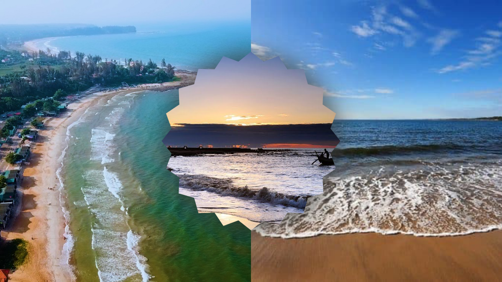

Giới thiệu Thắng cảnh
Tọa lạc tại huyện Vĩnh Linh, tỉnh Quảng Trị, biển Cửa Tùng từ lâu đã nổi tiếng với vẻ đẹp thơ mộng và yên bình. Nơi đây từng được người Pháp mệnh danh là "Nữ hoàng của các bãi tắm" nhờ dải cát trắng mịn màng, làn nước xanh trong vắt và những rặng phi lao rì rào trong gió. Không chỉ là một địa điểm nghỉ dưỡng lý tưởng, Cửa Tùng còn nằm trong vùng giao thoa lịch sử - văn hóa đặc sắc. Đứng bên bờ biển, du khách có thể phóng tầm mắt ngắm nhìn dòng sông Bến Hải đổ ra đại dương, cảm nhận luồng sinh khí tươi mới của một vùng đất đang từng ngày đổi thay nhưng vẫn giữ trọn nét hoang sơ, thuần khiết. Đến với Cửa Tùng, bạn không chỉ được hòa mình vào làn nước mát lạnh mà còn có cơ hội thưởng thức những món hải sản tươi ngon đặc trưng của vùng biển miền Trung. Hãy cùng chúng tôi khám phá vẻ đẹp bất tận này qua những thước phim và hình ảnh dưới đây.
Hình ảnh Khám phá